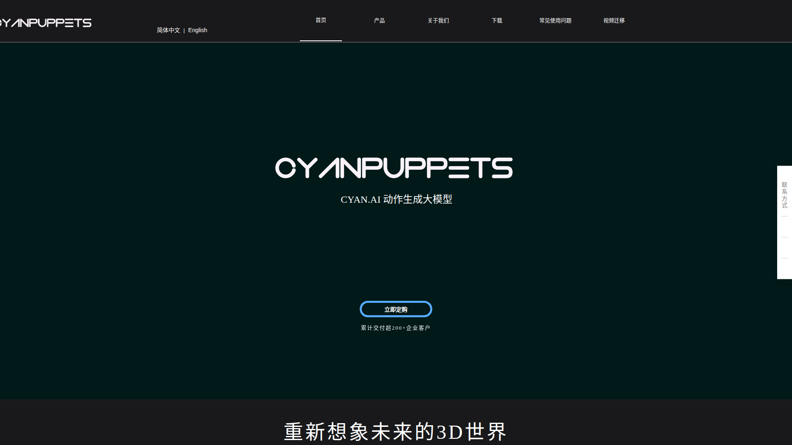

調研日期：2026-06-19
官網：https://www.cyanpuppets.com
公司：青瞳視覺（中國）
定價：Personal $50/月 | Enterprise $1,499/年
插件：Blender / Unreal Engine
CyanPuppets（青瞳視覺 / CYAN.AI）是中國 AI 動捕公司，擁有十億參數動捕大模型。從攝影機/影片即時提取 208 個關鍵點（臉 140 + 手指 21 + 四肢 30），延遲僅 0.1 秒。
核心能力一句話：十億參數 AI → 208 關鍵點（臉140+手21+肢體30）→ 0.1 秒延遲即時 → Blender/UE 插件。
解決的問題：
| 功能 | 支援 | 說明 |
|---|---|---|
| 全身動捕 | ✅ | 30 個四肢關鍵點 |
| 臉部追蹤 | ✅ | 140 個臉部關鍵點（高精度） |
| 手指追蹤 | ✅ | 21 個手指關鍵點 |
| 即時渲染 | ✅ | 0.1 秒延遲 |
| Blender 插件 | ✅ | 即時串流到 Blender |
| Unreal Engine 插件 | ✅ | 即時串流到 UE |
| 影片分析 | ✅ | 預錄影片也可處理 |
| 攝影機輸入 | ✅ | Webcam 即時 |
| 十億參數模型 | ✅ | 大模型品質 |
| 項目 | 規格 |
|---|---|
| 模型大小 | 1 Billion parameters |
| 追蹤點 | 208 總計（臉 140 + 手 21 + 肢體 30 + 其他 17） |
| 延遲 | 0.1 秒 |
| 輸入 | Webcam / 影片 |
| 輸出 | Blender/UE 即時串流 / 動畫匯出 |
| 應用領域 | 遊戲動畫、影視製作、機器人訓練、運動分析、VTuber |
| 資源 | 連結 |
|---|---|
| 官網 | https://www.cyanpuppets.com |
| 商店 | https://cyanpuppets.myshopify.com |
| 80.lv 報導（免費版開發） | https://cdn.80.lv/articles/cyanpuppets-free-offline-motion-capture-software-is-underway/ |
| 80.lv 報導（大模型） | https://80.lv/articles/convert-videos-to-motion-data-with-this-add-on |
| Let's Data Science 報導 | https://www.letsdatascience.com/news/cyanpuppets-releases-billion-parameter-motion-capture-model-61b69f07 |
| CGDive 收錄 | https://addons.cgdive.com/tools/cyan-puppets |
| AI 分享網介紹 | https://aisharenet.com/en/cyanai/ |
| 方案 | 費用 | 說明 |
|---|---|---|
| **Personal** | $50/月 | 個人使用 |
| **Enterprise** | $1,499/年 | 企業/團隊 |
| **Free Offline（開發中）** | $0 | 離線免費版（尚未正式發佈） |
| 面向 | 評估 |
|---|---|
| **互補性** | CyanPuppets 提供高精度臉/手（Kimodo 沒有的） |
| **格式** | 透過 Blender 插件可匯出各種格式 |
| **即時性** | CyanPuppets 即時預覽，Kimodo 是離線生成 |
| **成本** | $50/月 vs Kimodo 免費 — 成本差異大 |
高精度場景：
臉部+手指表演 → CyanPuppets(208點) → Blender 錄製 → FBX
全身表演動作 → Kimodo/Viggle → BVH/GLB
統一在 Blender 合併
等免費版發佈後：
CyanPuppets 免費版 → 替代臉部追蹤付費工具
CyanPuppets 定位：「高精度臉部+手指追蹤方案」
最適合：
• 需要精細臉部表情（140 點）的角色演出
• 需要手指動畫的場景
• 已有 Blender/UE Pipeline
等免費版後：
• 可能成為免費高精度動捕的首選
現階段不適合：
• 預算有限的量產（$50/月 vs Viggle $0.03）
• 只需要全身動捕的場景（overkill）
| 項目 | 評分 (1-5) |
|---|---|
| 與我們目標的相關性 | ⭐⭐⭐ |
| 技術成熟度 | ⭐⭐⭐⭐ |
| 易用性 | ⭐⭐⭐⭐ |
| 性價比 | ⭐⭐ |
| Pipeline 整合潛力 | ⭐⭐⭐⭐ |
| 量產化適合度 | ⭐⭐ |
推薦等級：🟡 觀望 — 技術指標很好（208 點、十億參數），但 $50/月不經濟。等免費離線版發佈後優先評測。
MotionLab Research · 2026-06-19